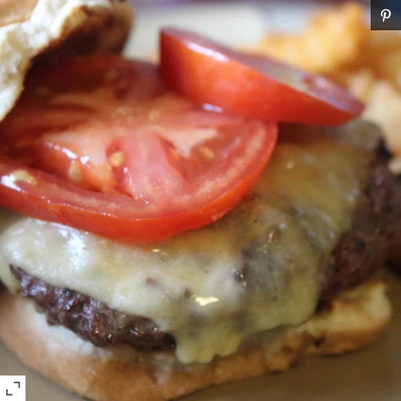

Cheese Burger

Wonderful stuffed burger that can be easily changed to suit different tastes. My kids who normally don't
have onions on their burgers REALLY enjoyed these. We served with french fries and root beer floats!
Ingredients
- 3 pounds ground beef
- ¼ teaspoon salt
- ½ teaspoon ground black pepper
- 3 tablespoons barbeque sauce
- ½ teaspoon garlic powder
- ½ pound bacon, cut into 1/4 inch pieces
- 1 medium onion, finely chopped
- ¾ cup shredded Cheddar cheese
- 6 hamburger buns, split
Steps
- In a large mixing bowl, mix together the ground beef, salt, black pepper, barbeque sauce and garlic powder
using your hands. Taking a small handful at a time (approximately 1/4 pound), shape into 12 patties.
Lay patties out on a cookie sheet and cover with plastic wrap; place patties in the refrigerator.
- Place bacon in a large, deep skillet. Cook over medium high heat until evenly brown, about 5 minutes.
Remove bacon from skillet with a slotted spoon and drain on paper towels. Turn the heat down to medium
and pan fry the onions in the remaining bacon drippings until soft and translucent and just beginning to brown.
Mix together onions and bacon in a small bowl.
- Prepare a grill or large skillet for medium heat.
- As the grill heats, pull beef patties out of the refrigerator; top 6 of the patties with 1- 1/2 tablespoons
of the bacon and onion mixture each, and sprinkle with shredded cheese. Top each with one of the remaining
patties and press the edges together to seal.
- Grill or pan fry the stuffed and sealed patties until cooked through, 2 to 3 minutes per side.
Serve on hamburger buns with condiments of your choice.